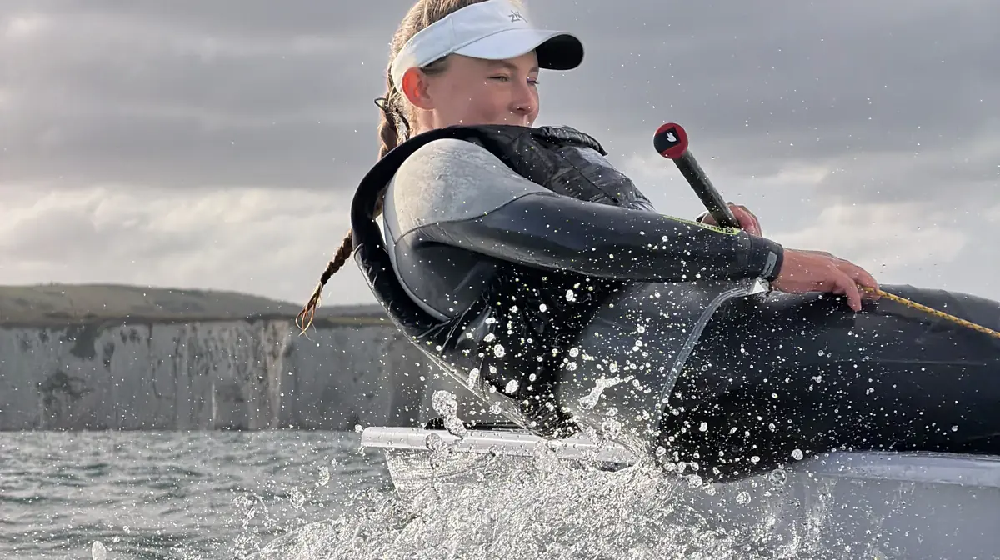

ILCA 4 and ILCA 6 training camp · Poole Yacht Club
Winter Training Series #10
- Dates
- 20–21 February 2027
- Price
- £180
- Boats
- ILCA 4 and ILCA 6
- Coaches
- James Foster and Kai Wolgram
- Venue
- Poole Yacht Club, The Yacht Haven, New Harbour Road West, Hamworthy, Poole BH15 4AQ
The final listed winter weekend at Poole Yacht Club, following directly on from the February Training Camp.
Main focus
Consolidate the week’s learning and sharpen race execution ahead of the spring season.
What to expect
- Two-day training block
- Technical consolidation
- Race-focused training
- Video analysis and feedback
Suitable for: ILCA 4 and 6 sailors, primarily those racing nationally with international aspirations.
Booking now open. Book by 30 January to avoid the £20 late booking fee.